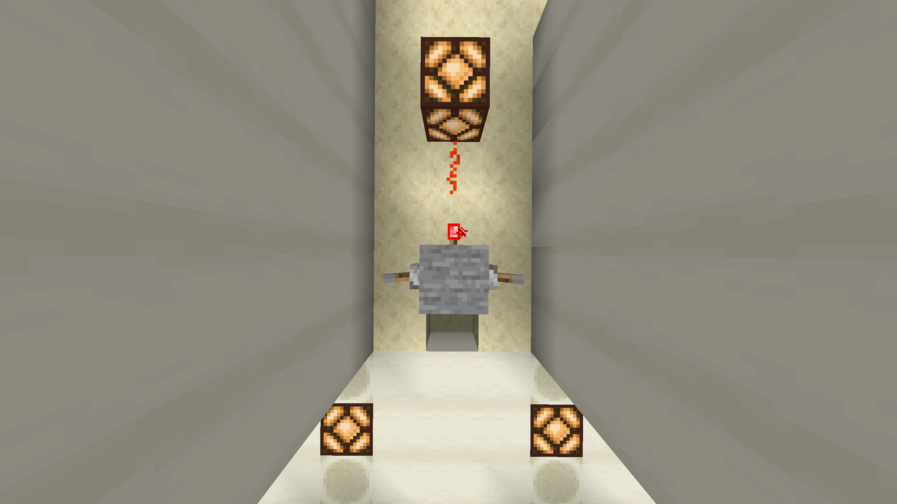

NOR gate

Nullam iaculis nunc sed purus vehicula egestas. Integer quis sapien nec massa efficitur vulputate. In fermentum pretium lectus, nec posuere leo consectetur vitae. Proin nibh libero, varius ultricies ultrices vitae, rutrum sed ligula. Aliquam erat volutpat. Praesent ullamcorper quam elementum ex sodales sagittis. Curabitur eleifend laoreet eros vel tempus. Sed quam lorem, egestas nec neque ut, tempus sollicitudin purus. In ut tortor tortor. Integer nec tempor enim. Fusce sodales pulvinar est, sit amet mollis quam. Aenean est velit, fermentum et mauris a, maximus egestas justo. Pellentesque varius ipsum eu diam consectetur congue. Suspendisse viverra nisi at molestie euismod. Curabitur molestie non metus consequat bibendum. Mauris posuere sem sed consequat lobortis.
History
In et felis et augue vehicula malesuada in quis augue. Phasellus lacus lacus, pharetra id placerat ac, ultricies eu nisi. Sed sed mattis libero. In in urna dui. Fusce in massa aliquet, aliquam lacus sed, interdum leo. Class aptent taciti sociosqu ad litora torquent per conubia nostra, per inceptos himenaeos. Duis a auctor sapien. Quisque nec tincidunt turpis, vitae luctus nibh. Morbi ut suscipit leo, a accumsan turpis. Vestibulum sed arcu ante. Praesent luctus at purus sit amet consectetur. Ut vulputate tincidunt condimentum. Praesent in mattis diam. Integer sed ipsum in est pulvinar placerat. Fusce volutpat ex nec mollis dictum. Nunc est justo, tempus et sagittis eu, laoreet sed risus. Morbi tincidunt mi id nisi interdum convallis. Donec rutrum congue urna, bibendum volutpat enim mattis nec. Duis ut massa blandit, rutrum ante quis, condimentum neque. Quisque tempus sem eu lectus cursus commodo. Integer vitae sem vestibulum, consectetur erat viverra, sodales ligula. Quisque imperdiet neque sit amet pharetra lobortis. Pellentesque ante dolor, ornare ut erat vitae, consequat vulputate ex. Curabitur imperdiet est non accumsan malesuada. Vestibulum hendrerit ante nunc, et placerat turpis placerat non. Nullam condimentum libero eu scelerisque aliquam. Vivamus tempus erat dui, vitae facilisis metus mattis ut. Duis sit amet neque dignissim, fermentum nibh et, fringilla velit. Duis sit amet varius ipsum, et cursus sapien. Aenean maximus molestie scelerisque. Etiam sollicitudin, turpis vel viverra bibendum, arcu dolor volutpat odio, in posuere sem augue eget neque. Maecenas cursus congue nisl nec pulvinar. Vivamus consequat faucibus purus molestie lobortis. Etiam maximus et nulla ut viverra.
| Input | Output | ||
|---|---|---|---|
| A | B | ||
| 0 | 0 | 1 | |
| 1 | 0 | 0 | |
| 0 | 1 | 0 | |
| 1 | 1 | 0 | |
Usefull Links